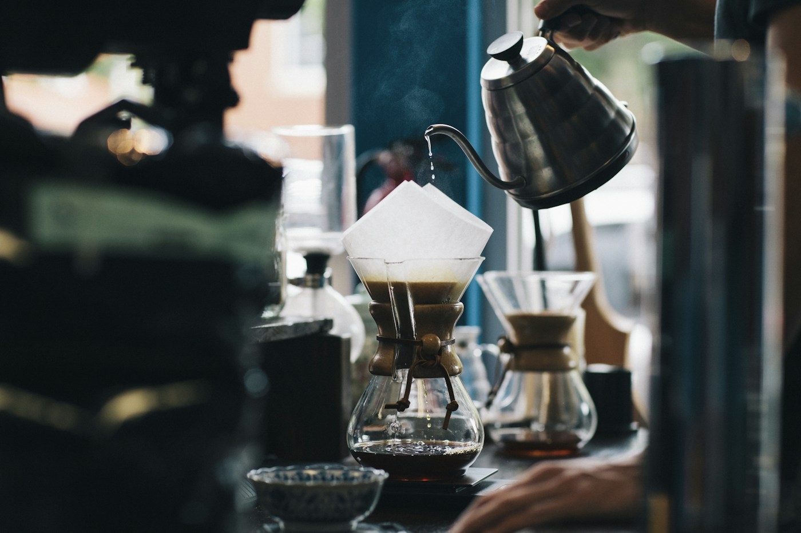

01 / OUR STORYTHE NOIR WAY
MORE THAN A CUP
For the moments in between.
A pause between places. A conversation that runs long. The first quiet sip before the day begins. Noir is imagined as a space for all the little moments worth staying for.
Discover the space
✳
Here, we believe the best things
take a little time.